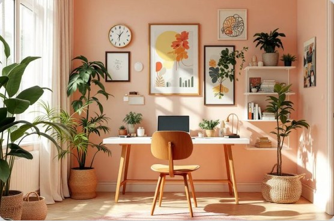

Elena Moraru
Consultant Showroom & Customer Care
CasaNova Design s-a născut din dorința de a transforma locuințele în spații care inspiră, liniștesc și spun o poveste prin fiecare detaliu. Totul a început cu pasiunea pentru mobilier funcțional și estetic, creat pentru a aduce armonie în viața de zi cu zi. De la primele schițe realizate într-un mic atelier, până la proiecte complexe de design interior, am crescut alături de clienții noștri, dezvoltându-ne cu fiecare casă transformată.

Consultant Showroom & Customer Care
Specialist Marketing & Brand Communication
Manager Producție Mobilă
Designer Interior Principal
Consultare inițială – discutăm nevoile, stilul dorit și bugetul.
Măsurători și planificare – analizăm spațiul și realizăm schițe precise.
Design și propunere 3D – îți prezentăm variante realiste.
Producție și finisare – realizăm fiecare piesă cu atenție la detalii.
Livrare și montaj – asigurăm transportul și instalarea completă.
Garanție și suport – oferim asistență post-instalare.
Folosim materiale premium, selectate cu atenție, pentru a crea mobilier durabil și plăcut vizual.
Proiectăm mobilier care îmbină estetica modernă cu funcționalitatea.
Gestionăm fiecare etapă cu profesionalism, pentru o experiență simplă și sigură.
Portofoliul nostru include proiecte finalizate impecabil și recomandări ale clienților.